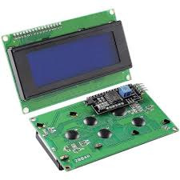
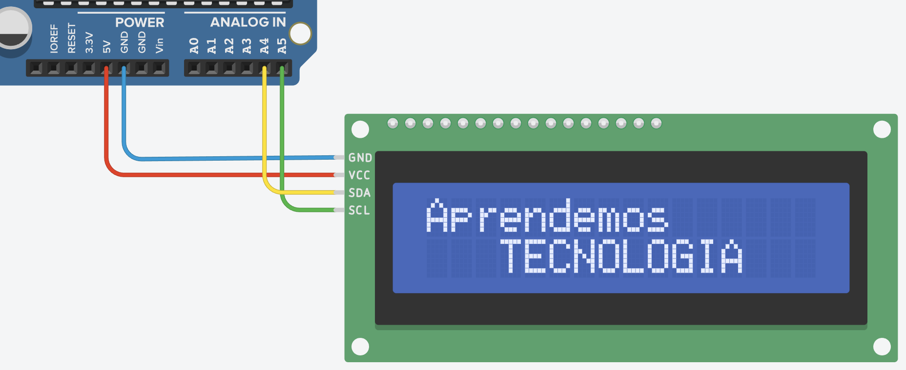
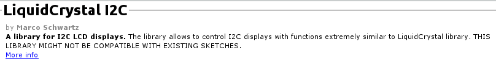
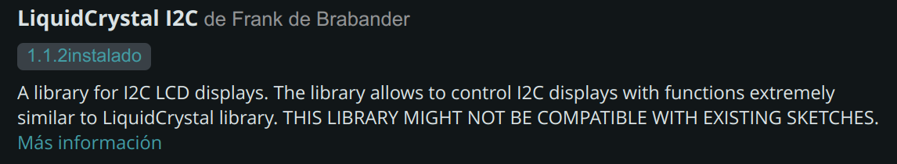

18. Pantalla LCD1602¶
 VÍDEO: Pantalla LCD1602 con Arduino
VÍDEO: Pantalla LCD1602 con Arduino
La pantalla LCD1602 (16 columnas x 02 filas) para microcontrolador Arduino permite mostrar visualmente los datos de los sensores.
{kind=link}

Figura 18.1Pantalla LCD1602 con conexión I2C.¶
Nosotros vamos a usar la que tiene un módulo I2C que reduce las conexiones a 4 cables:
GND
Vcc (5V)
SDA: serial data, siempre conectado al pin A4 en Arduino UNO.
SCL: serial clock, siempre conectado al pin A5 en Arduino UNO.
{kind=link}

Instalación de la biblioteca¶
Nos vamos al menú Herramientas –> Gestionar bibliotecas e instalamos la siguiente:
En Arduino IDE 1: LiquidCrystal I2C de Marco Schwartz (ponemos Schwartz en el buscador):

En Arduino IDE 2: LiquidCrystal I2C de Frank de Brabander (ponemos Brabander en el buscador):

{kind=link}
{kind=link}
Programación básica¶
1// Incluímos las dos bibliotecas siguientes:
2#include "Wire.h"
3#include "LiquidCrystal_I2C.h"
4
5//definimos el display con el nombre lcd,
6//la LCD está en la dirección I2C 0x27, tiene 16 columnas y 2 filas:
7LiquidCrystal_I2C lcd(0x27, 16, 2);
8
9void setup() {
10 lcd.init(); // Iniciamos el LCD
11 lcd.backlight(); // Encendemos la retroiluminación
12
13 // Colocamos el cursor donde queremos que inicie el texto
14 // Comenzamos a contar desde cero para la posición del cursor: 0, 1, 2...
15 lcd.setCursor(2, 0); // Tercera columna de la primera fila
16 lcd.print("APRENDEMOS"); // Mostramos en pantalla el texto
17 lcd.setCursor(3, 1); // Cuarta columna de la segunda fila
18 lcd.print("TECNOLOGIA"); // NO ES COMPATIBLE CON TILDES
19}
20
21void loop() {
22}
Nota
Si no se ven o se ven mal los caracteres, podemos ajustar el contraste de la pantalla usando el potenciómetro azul de la parte de atrás.
Decimales de float¶
Para elegir el número de decimales mostrado de una variable float ponemos una coma y el número de decimales deseado. Ejemplo para mostrar el valor de la variable temp con un decimal:
lcd.print(temp, 1);
Caracteres especiales¶
Tenemos en cuenta que el LCD no es compatible con tildes.
Para poner el símbolo º de grados, escribimos la siguiente línea:
lcd.print((char)223);
La programación básica de un corazón sería así, fíjate que los 0 y 1 forman el dibujo del corazón:
1#include <Wire.h>
2#include <LiquidCrystal_I2C.h>
3
4LiquidCrystal_I2C lcd(0x27, 16, 2);
5
6// Define el carácter personalizado del corazón
7byte heart[8] = {
8 B00000,
9 B01010,
10 B11111,
11 B11111,
12 B11111,
13 B01110,
14 B00100,
15 B00000
16};
17
18void setup() {
19 lcd.init();
20 lcd.backlight();
21
22 // Cargar el carácter personalizado en la memoria del LCD:
23 lcd.createChar(0, heart);
24
25 // Limpiar la pantalla:
26 lcd.clear();
27
28 // Coloca el cursor en la posición (0, 0)
29 lcd.setCursor(0, 0);
30
31 // Muestra el carácter personalizado del corazón (caracter 0)
32 lcd.write(0);
33}
34
35void loop() {
36}
Para dibujar caracteres personalizados de forma más visual, hay editores online como el editor de Arduinoblocks que nos generan el código directamente.